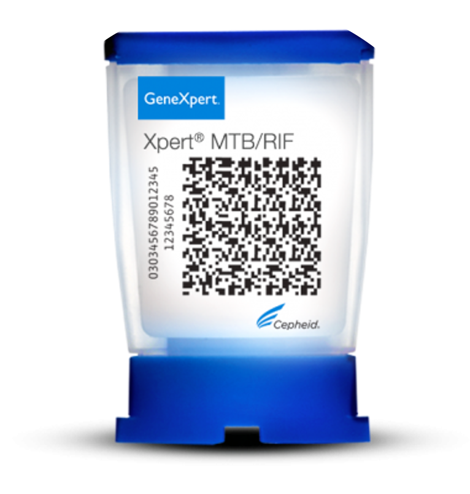
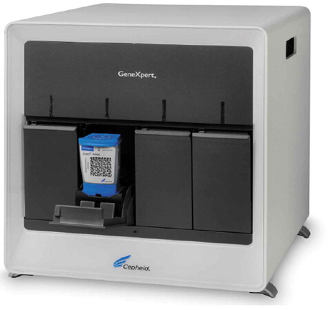
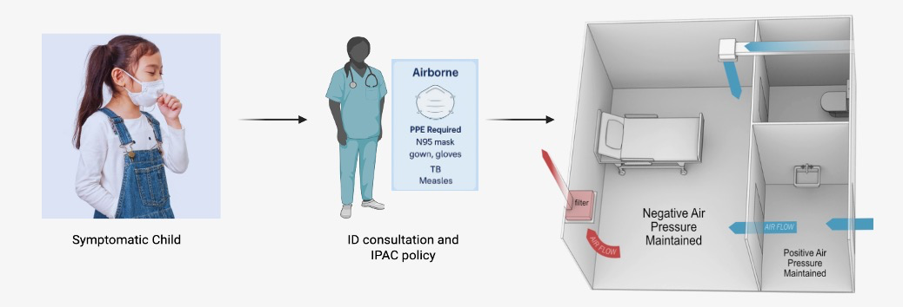
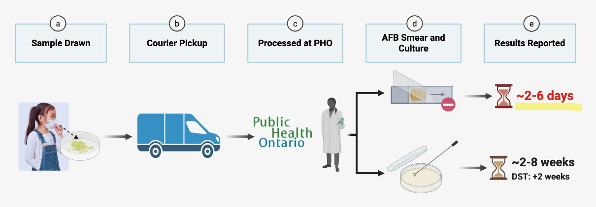
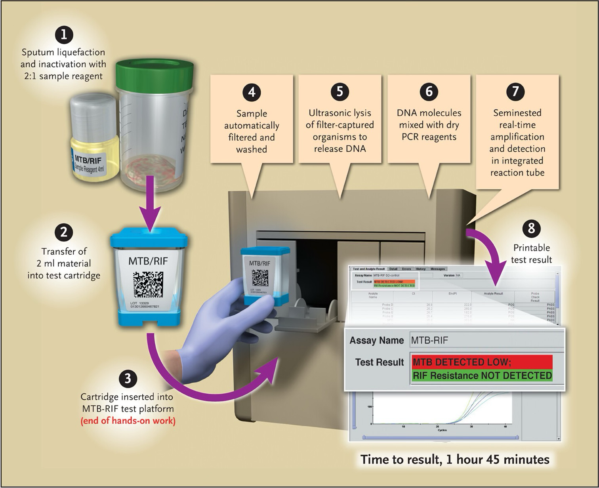
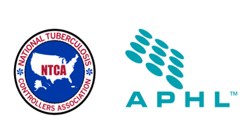
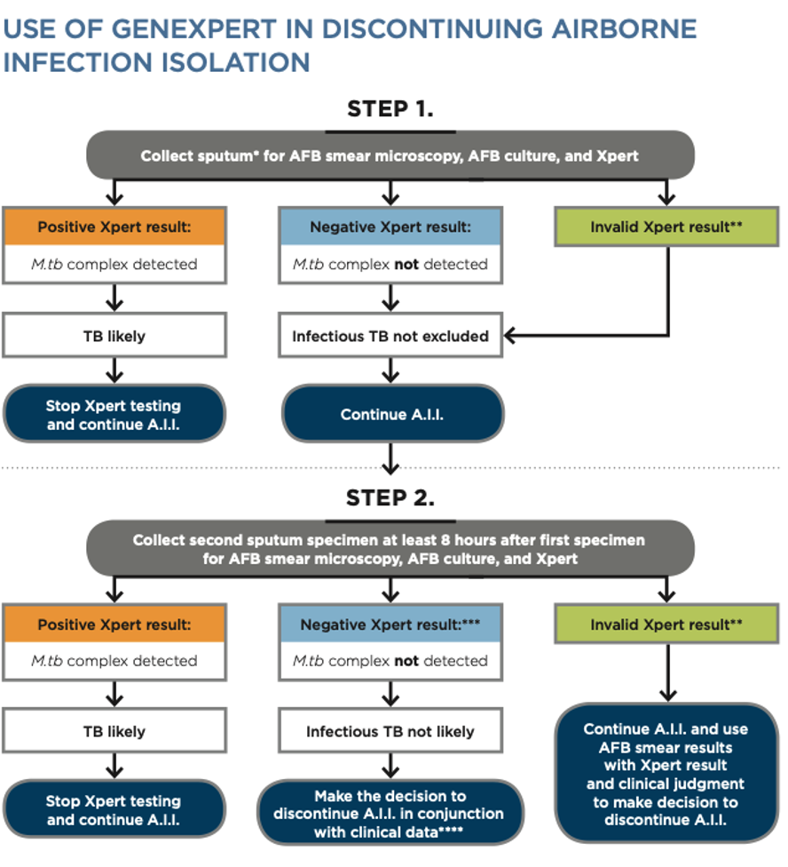
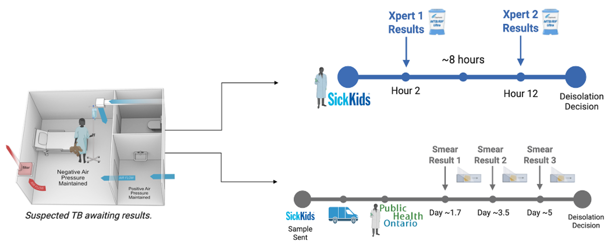

From Diagnosis to Deisolation: GeneXpert MTB/RIF Ultra Implementation for Airborne Deisolation of Suspected Pediatric Tuberculosis Patients at the Hospital for Sick Children

When children are suspected of having pulmonary tuberculosis (TB) at SickKids, they must be isolated in airborne infection isolation negative-pressure rooms until diagnostic test results return (≥3 consecutive morning sputum samples for acid-fast bacillus (AFB) smear). At SickKids, this process was taking an average of 2-6 days.
No formal policy on discontinuation of precautions, guided by AFB smear results.
Delayed clinical decision making and patient management
Child and family restricted to room and limited access to Child Life activities
Higher costs associated with extended airborne precautions (PPE alone: $138/day)
Constrained availability of isolation rooms and staffing burden

Current TB testing pathway requires:
Average: 5.2 days in isolation
Implemented the GeneXpert MTB/RIF Ultra assay—a rapid molecular test that detects TB in under 2 hours, right at the hospital.
Sputum or other specimen collected from patient
GeneXpert analysis completed in 2 hours
Rapid clinical decision-making enabled

GeneXpert detects TB DNA and rifampin resistance
Repurposed existing COVID-19 testing GeneXpert instrument
On-site testing removes courier and weekend delays
72.8% sensitivity—much better than traditional methods
Endorsed as initial diagnostic test for pediatric TB
This quality improvement study used:
Average: 0.5 days in isolation
Importantly, the National TB Controllers Association and Association of Public Health Laboratories Consensus Statement (NTCA & APHL, 2016):


Figures from: NTCA and APHL Consensus Statement
Using retrospectively collected baseline diagnostic turnaround time data and costing from SickKids and Public Health Ontario, researchers and I conducted a cost-benefit analysis to estimate time saved, reduced isolation duration, and associated cost savings.

Diagnostic Time Reduced
Per Patient Cost Reduction
Average Isolation Reduction
Total: $6,566
Total: $805
Net Savings: $5,761 per patient
Dr. Melissa Richard-Greenblatt's leadership and advocacy
Multidisciplinary team across departments
Existing GeneXpert equipment from COVID-19
Rigorous data analysis and modelling
This implementation framework can guide other pediatric hospitals across Canada in adopting rapid TB diagnostics.
Investments in rapid diagnostics represent not just institutional efficiency gains, but contributions to broader public health preparedness and equity. As GeneXpert platforms become more widely available following their expanded use during the COVID-19 pandemic, Canadian institutions are well positioned to leverage existing infrastructure to modernize TB diagnostics.
Ultimately, earlier diagnosis and treatment initiation through rapid testing has the potential to improve outcomes across both hospital and community settings—so we can get kids back to being kids faster.
Kunkel, A., Abel Zur Wiesch, P., Nathavitharana, R. R., Marx, F. M., Jenkins, H. E., & Cohen, T. (2016). Smear positivity in paediatric and adult tuberculosis: systematic review and meta-analysis. BMC Infectious Diseases, 16, 282. https://doi.org/10.1186/s12879-016-1617-9
National Tuberculosis Controllers Association, & Association of Public Health Laboratories. (2016). Consensus statement on the use of Cepheid Xpert MTB/RIF assay in making decisions to discontinue airborne infection isolation in healthcare settings. https://www.tbcontrollers.org/docs/resources/NTCA_APHL_GeneXpert_Consensus_Statement_Final.pdf